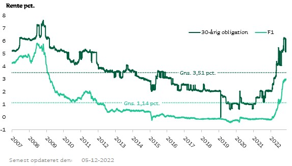

TEMA
Førstegangskøb
Find ud af hvor meget du kan låne ved hjælp af vores låneberegner. Få en vejledende beregning på hvor meget du kan låne
Hvad er et boliglån?
For mange førstegangskøbere kan boliglån virke som det vilde vesten. Begreber som kurser, renter, terminer osv. kan virke forvirrende, men i denne artikelserie vil vi gå i dybden med boliglån som førstegangskøber.
Viden om boliglån
Et boliglån er et lån, der bruges til at finansiere køb eller renovering af ejendomme. Et boliglån har normalt lavere rentesatser end andre typer lån, fordi det er sikret af ejendommen. For at kunne få et boliglån er der en række krav der skal opfyldes
Kravene til et boliglån varierer fra långiver til långiver (banken), men der er nogle fælles aspekter, som alle långivere bør overveje. Nogle af disse krav omfatter en kredithistorik, økonomisk soliditet, formue og indkomst. Derudover har långivere ofte krav om, at låntager skal være mindst 18 år og have et fast arbejde med en indtægt. De fleste banker kræver at man har et fast arbejde, så hvis man er studerende og vil ind på boligmarkedet må man overveje at leje.
Bidragssatsen er den procentdel af lånet, som långiveren kræver, at låntageren betaler først. Bidragssatsen varierer fra långiver til långiver, men det kan være mellem 5% og 20%. Bidragssatsen er udbetalingen til lånet, og man skal som minimum have 5% til egen udbetaling. Resten kan blive dækket af et banklån (Obs på at det har en høj rente ift. realkreditlån)
Prøv vores låneberegner, og se hvor meget du kan låne. Indtast din husstands bruttoindkomst, og din egen udbetaling til boligen.
Du kan låne :
Renter
Renter på boliglån er de årlige omkostninger, som du betaler for at låne penge til at købe en bolig. De består af to hovedtyper af renter: variable renter og faste renter. Variable renter ændrer sig ofte, og de kan være højere eller lavere end faste renter. Fordelen ved variable renter er, at de ofte er lavere end faste renter, hvilket betyder, at du kan spare penge på dit lån. Ulempen er, at de kan stige over tid, hvilket betyder, at dine årlige omkostninger også stiger. Især i disse tider med usikre finansielle tider kan en variabel rente hurtigt stige.
Fast rente er den rente, du betaler for hele løbetiden for dit lån. Fordelen ved faste renter er, at du ved, hvor meget du skal betale for dit lån for hele løbetiden. Ulempen er, at de ofte er højere end variable renter og kan ikke ændres over tid Boligejere som tegnede et realkreditlån med fast rente står godt mod hårde finansielle tider, da renten ikke kan blive ændret i modsætning til det variable lån.
 Renteudviklingen på realkreditlån siden 2007 - henholdsvis et fastforrentet 30-årigt obligationslån og et rentetilpasningslån med årlig rentetilpasning (F1). Graf: Jyske Bankhttps://www.jyskebank.dk/erhverv/ejendomsfinansiering/kurser/rente-og-kursudvikling
Tænk langsigtet
Er boligkøb noget for dig som førstegangskøb? Hvis du kun skal bo i boligen 3-5år, kan det bedre svare sig at leje. Især i disse tider med høje renter, kan det være attraktivt at leje, og se tiden an.
Hvorfor kan man ikke få realkreditlån til andelsbolig?
En anden vej at komme ind på boligmarked er med en andelsbolig. Andelsboligerne er typisk billigere end ejerboligerne, men kan være svære at få fat i grundet efterspørgslen, især de større byer.
Dog kan man ikke få et realkreditlån i en andelsbolig, da realkreditlån kan ikke bruges til at finansiere andelsboliger, fordi andelsboliger ikke er sikret af ejendom. Derfor kan en långiver ikke sikre boliglånet ved at sætte pant i ejendommen.
Chatbot
Har du stadig spørgsmål omkring dit førstegangskøb?